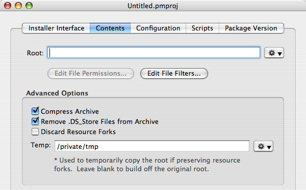

Specifying the Contents
The contents for your package must be organized into a single directory, called a root. The directory structure within this root will be installed to the install location.
The root directory for your package is specified in the “Contents” tab, and can be an absolute or relative path.
 The “Contents” tabIf there are files in your root that you do not wish to be included in your package (e.g. CVS or Subversion directories), you can filter them with regular expression “File Filters”.
More Info…
If you are installing items to multiple locations, the affected directory structure must be duplicated within your root. For example, if you were installing an application to /Applications and a font to /Library/Fonts, you'd have a root similar to the following:
- Root - Applications My Great App.app - Library - Fonts - My Great Font.dfont
In this example, you would make your install location /. However, it is recommended that in cases like this, you make separate packages for the application and for the font.
It is also critical in situations like this to ensure that the permissions and ownership of files in your root are correct.
More Info…
An Install_Resources directory within your root will not be installed, but rather used by Installer.app to configure its interface during your install.
More Info…